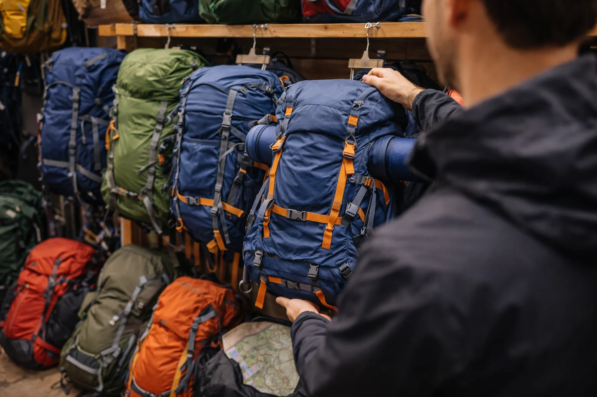

Why the Right Trek Backpack Matters
A trekking backpack is more than just a bag to carry your gear. It becomes your constant companion throughout the journey, holding everything you need for comfort, safety, and survival on the trail.
Unlike regular backpacks used for school or daily commuting, trekking backpacks are designed specifically for outdoor conditions. They are built to distribute weight efficiently, provide support for long walks, and keep your gear organized during the trek.
Choosing the wrong backpack can quickly turn a trek into an uncomfortable experience. Poorly fitted bags can cause shoulder pain, back strain, or imbalance while walking on uneven trails.
On the other hand, the right backpack fits comfortably, distributes weight properly, and allows you to move freely even during long hikes. Taking the time to choose the right trekking backpack can greatly improve your overall trekking experience.
Choose the Right Backpack Size
Backpack size is usually measured in liters and indicates how much gear the bag can carry. Choosing the correct size depends on the type and duration of your trek.
- 20–30 liters: Ideal for day treks and short hikes
- 30–40 liters: Suitable for overnight or weekend treks
- 40–60 liters: Recommended for multi-day treks
- 60+ liters: Used for long expeditions or heavy gear
For most beginner trekkers, backpacks between 20 and 30 liters are sufficient for day treks. Carrying a bag that is too large can encourage overpacking and make the trek unnecessarily tiring.

Choosing the right backpack size helps keep your load comfortable and manageable.
Look for Proper Weight Distribution
One of the key advantages of trekking backpacks is their ability to distribute weight efficiently across your body. Good backpacks transfer part of the load to your hips rather than placing all the pressure on your shoulders.
Most trekking backpacks include padded shoulder straps, a chest strap, and a waist belt. The waist belt is especially important because it helps support the weight of the backpack using your hips and core muscles.
This design reduces strain on your shoulders and allows you to walk longer distances more comfortably.
A well-designed backpack should feel balanced and stable when worn correctly.
Check Comfort and Fit
Comfort is one of the most important factors when choosing a trekking backpack. Since you will be carrying the bag for several hours, it should fit your body properly.
The shoulder straps should sit comfortably without digging into your shoulders. The back panel should align naturally with your spine, and the waist belt should wrap securely around your hips.
Trying the backpack before purchasing is always a good idea. Walk around with the bag for a few minutes to see how it feels when loaded.
A comfortable fit ensures that the backpack moves naturally with your body while walking.

Look for Good Ventilation
Trekking often involves long hours of walking, which can cause your back to sweat. Many modern trekking backpacks include ventilated back panels designed to improve airflow.
These ventilation systems create a small gap between the backpack and your back, allowing air to circulate and reduce heat buildup.
Better ventilation improves comfort during long hikes, especially in warm or humid conditions.
While ventilation may seem like a small feature, it can make a noticeable difference during extended treks.
Check Compartments and Accessibility
A well-designed trekking backpack should make it easy to organize your gear. Multiple compartments help separate items such as clothing, snacks, electronics, and medical supplies.
Look for backpacks with useful features like:
- Top compartments for quick-access items
- Side pockets for water bottles
- Front pockets for rain jackets or snacks
- Internal sections for organizing gear
- Attachment loops for trekking poles or accessories
These features allow you to access important items quickly without unpacking the entire bag during the trek.
Look for Durable and Weather-Resistant Material
Trekking backpacks are often exposed to rough conditions including rocks, rain, mud, and dust. Choosing a backpack made from durable materials ensures it lasts longer and protects your gear.
Many trekking backpacks are made from strong synthetic fabrics that resist tearing and wear. Some backpacks also include built-in rain covers that protect your belongings during unexpected showers.
Durable materials not only improve the lifespan of the backpack but also provide extra reliability during challenging outdoor conditions.
A sturdy backpack ensures that your gear stays safe throughout the trek.
Mototrek Tip
When choosing a trekking backpack, comfort should always come first. A slightly lighter or smaller backpack that fits well is usually better than a larger bag that feels uncomfortable during long hikes.